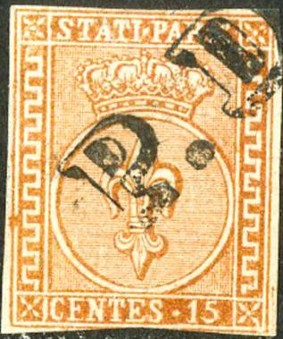
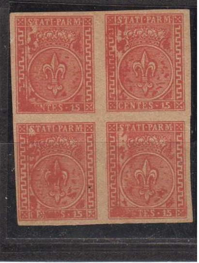
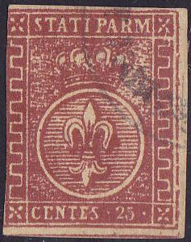
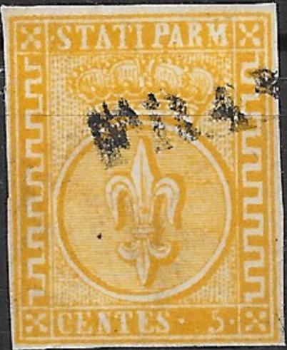
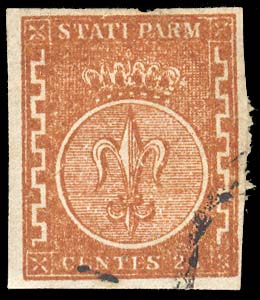
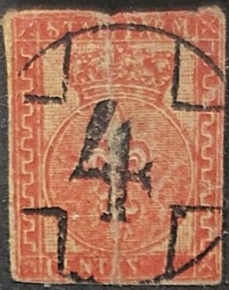

Return To Catalogue - Parma 1852 issue, forgeries, part 1 - Parma 1852 issue, forgeries, part 3 - Parma 1852 issue - Parma 1857 issue - Parma 1859 issue, part 1 - Parma 1859 issue, part 2 - Italy
Note: on my website many of the
pictures can not be seen! They are of course present in the
catalogue;
contact me if you want to purchase the catalogue.
Currency: 1 Lira = 100 Centesimi
Parma 1852 issue, forgeries, part 1.


The above forgery of the 40 c has lines as a background behind the crown, it should be small dots! I think the 15 c and 25 c values are made by the same forger, but the design in the background does not consist of lines? The "C" of "CENTES" is placed too close to the white line to the left of it. The "S" of "STATI" is slanting forwards. The block of four 15 c stamps might also have been made by the same forger; note that the impression is now very blotchy.


A 15 c forgery with a forged "PARMA 14 MARZ 58" cancel,
also two forgeries of the next issue with the same cancel.

25 c forgery with a "PARMA 23 MARZO" line cancel.


"PAPM" instead of "PARM" forgeries; last
images are scanned from Le Timbre Poste by Moens and from Gray
and de Torres catalogues.
In the above forgery of the 40 c the "A" of "STATI" is too broad and the value "40" doesn't resemble the genuine stamp. Furthermore there is no cross on top of the crown, instead there is a pearl. The bogus 10 c red was probably issued by the same forger. The inscription on top appears to be "STATI PAPM" ("P" instead of "R"). I've also seen the 10 c in the bogus color green. The oldest "PAPM" forgery I have seen is from Moens in his Le Timbre Poste No.129, page 71 from September 1873. This forgery is identical to the image provided in the John Edward Gray 'The Illustrated Catalogue of Postage Stamps' of 1870 on page 40 (see image above). This forgery can also be found in the catalogue of Placido Ramon de Torres "Album Illustrado para Sellos de Correo" of 1879 (information passed to me thanks to Gerhard Lang, 2016) on page 85 (see last image). Note that there are scratches on the de Torres design, which don't appear on the Gray design or on the forgeries.



(left and right frame ornaments are different from the genuine
stamps)
In the above forgeries the ornaments (Etruscian pattern) are different in the left and right frames. Also the circle does not touch the side frames. It is very blotched, I think this is the fourth forgery described in Album Weeds. The 5 c orange forgery above seems to have a "K.K. ZEITUNGS" cancel? The "S" in "STATI" is too small.
 


Forgeries with a straight "FRANK" (with "K"!
and without "O" possibly also with "C")
cancel.

Uncancelled forgeries of the same forgery set.
Another forgery with wrong side ornaments is shown above, this is especially clear in the left bottom corner, the Etruscian pattern stops at the left hand side (in the genuine stamps it stops at the right hand side). I've seen it only this bogus "FRANK"/ "FRANCO"?). The value 15 c red and 15 c black also exists of this particular set. I've seen these forgeries on a sheet with the text 'H.Hänsler Zürich' (possibly the maker or seller of these forgeries?).


Very similar forgery, but with the side ornaments on the left
bottom side starting earlier.
The above forgeries have the side ornaments different, there are only 5 turns of the Etruscian pattern on each side.


(Senf forgeries, based on an earlier Moens illustration)
Senf made a forgery of the 5 c yellow stamp (also orange?). This forgery was distributed with stamp journal the 'Illustrierten Briefmarken Journal', No 14 (16 July 1887) as an 'art supplement' or 'Kunstbeigabe'. The forgery always bears the word 'Facsimile' on top. Note the strange "S"s. The second image shows a stamp with the word 'Facsimile' first having been partly erased and then a 'cancel' was applied to the area to hide this word. Apperently, Senf copied the design from an earlier Moens illustration from Les Timbres Poste Illustre of 1864 (by erasing the "1" to make it a 5 c instead of a 15 c).
I've been told that this tete-beche 15 c pair is a Sperati
forgery
A forgery of the 15 c with inscription "CENTS" instead
of "CENTES"


Forgeries with "CENTES" too far to the right. The
sideornaments don't have the correct number of ondulations. There
is a small line sticking out of the left upper corner. They all
have some unreadable town cancel.

Forgery with very thin lettering. The stamp with the strange
"4" cancel might also be from the same source.


Yet another forgery with strange "S"s and the fleur de
lis different. The red, rather convincing, stamp might also be a
forgery made by the same forger?


Two other forgeries, presumably made by the same forger. Note the
very thick side ornaments.

And yet another forgery type.
Modern forgeries:
Reduced sizes
Reduced sizes
The above modern forgeries of the 5 c yellow, 15 c red and 25 c brown are offered in large quantities on Ebay (2005). Note the extremely large margins around the stamps. They are often offered together with other Italian States modern forgeries. All three values have the same defects, for example a dot in the white line below the "M" of "PARM". They exist with cancels, which makes them already much more dangerous.
Album Weeds lists a further three more types of forgeries, besides the ones shown here.
For Parma 1857 issue, click here, and for Parma 1859 issue, click here.


{kind=link}
{kind=link}
{kind=link}
{kind=link}
{kind=link}
{kind=link}